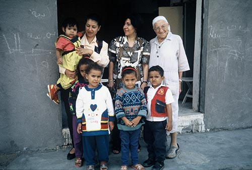
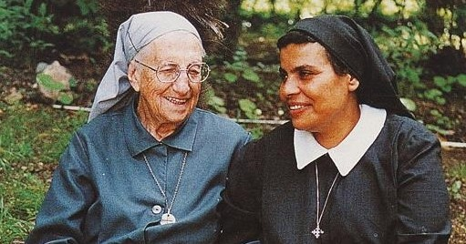
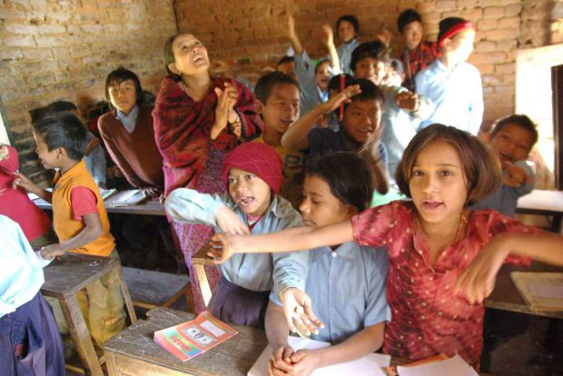
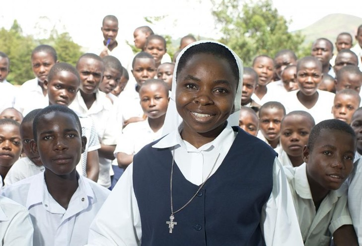

Qui sommes-nous?
Association Sœur Emmanuelle est une organisation non gouvernementale (ONG) de solidarité internationale, spécialisée dans le développement de l'enfant. Indépendante, laïque et apolitique, elle est ouverte à tous.
C'est en hivers 1981 qu'a été fondée cette association sous l'impulsion d'étudiants de 20 ans ayant pour projet de créer un centre d'alphabétisation au Mokattam (Egypte) dans les bidonvilles, malgré une tentative de dissuasion instaurée par sur Emmanuelle craignant pour la vie de ces derniers, C'était sans compter sur leur pugnacité et l'étonnant sens de l'hospitalité des habitants locaux. Malgré de nombreuses difficultés rencontrées pour se nourrir et cohabiter non pas avec les locaux mais les rats, tout se passait de bon train jusqu'au moment où, l'entreprise d'alphabétisation mis en place s'est vu risqué d'être mis en péril par des entrepreneurs de la banque centrale, ayant projetés de raser le centre au profit d'e l'instauration d'une bretelle d'autoroute. Chose qui aurait pu se faire, s'il n'y avait pas eu l'intervention salutaire de Sur Emmanuelle, revenue sur ses craintes vis-à-vis des habitants, elle a organisé une marche à Bruxelles ayant mobilisée un millier d'habitant et ayant permis de récolter plus de 7500 et quelques avantages en nature dont une jeep, convertie en ambulance. Le succès de cette opération ayant permis au centre de s'agrandir, le projet de bretelle d'autoroute n'y a pas vu le jours.
Lotterie !
Dans le cadre de notre opération de tombolas 2017, nous avons le plaisir d'être la première association à porter ce projet sur une plateforme internet! Nous respectons bien entendu la loi réglementant ce type de tombolas, et avons reçu pour 2017 l'autorisation légale par Arrêté Royal. Toutes les informations (règlement, conditions générales, lots) sur le site fortunoo
Egypte
Amener les enfants du quartier "El Khanka" (bidonville du Caire) à un niveau éducatif et social leurs permettant de se lancer dans la vie. Renforcer ses capacités innovantes et créatives est l'objectif principal du projet "El Khanka".
Soudan
Village, dans la région de Kuron, qui rassemble plusieurs tribus. Son objectif est de promouvoir l'entente entre ces ethnies pour permettre un développement social et économique harmonieux. Nous concentrons notre aide sur l'éducation.
Népal
NÉPAL "Child Protect ion Centers and Services" La rue existe, vit, danse, souffre. CPCS se veut être une passerelle entre la société et la rue. Chaque jour, CPCS accueille des centaines d'enfants pour manger, dormir, se faire soigner, etc.
Congo
L'association "Oser la Vie" se bat contre la croyance fort répandue en RDC qu'un enfant peut être sorcier. Elle a pris en charge une cinquantaine d'enfants qui retrouvent peu à peu la confiance en soi après avoir connu les menaces, la violence, parfois même la torture.